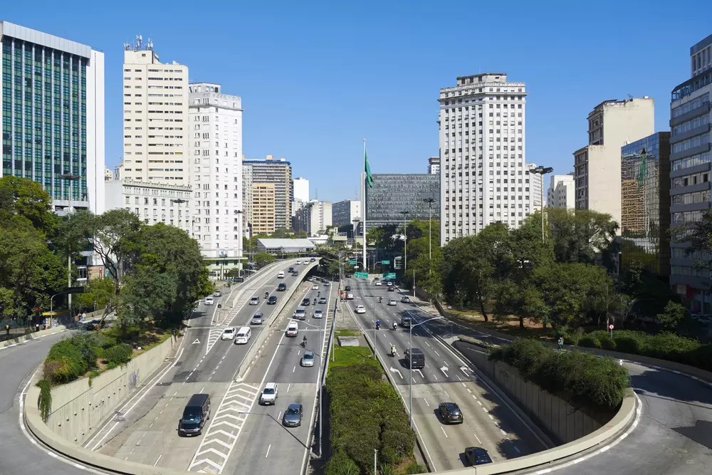
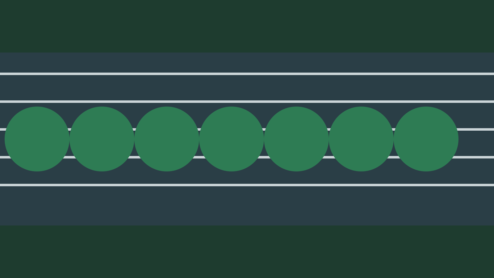

Infraestrutura
Pavimentos frios e conforto térmico em vias de alta demanda
Análise comparativa de materiais com redução de absorção de calor e implicações para o microclima urbano.

Canal Editorial TRAMA
Publicações semanais sobre mobilidade, infraestrutura, logística e sustentabilidade, com linguagem técnica e acesso aberto.
Ver publicações recentesInfraestrutura
Análise comparativa de materiais com redução de absorção de calor e implicações para o microclima urbano.
Logística
Indicadores de produtividade, emissões e tempo de permanência para apoiar novas regras operacionais.
Mobilidade Urbana
Ferramenta prática para diagnóstico de conflito entre fluxos de pedestres, ciclistas e veículos motorizados.

Dados e Métodos
Padrão adotado no laboratório para reprodutibilidade, versionamento e atualização contínua de indicadores.

Meio Ambiente
Discussão sobre material particulado e exposição em corredores de transporte coletivo de alta frequência.
Extensão
Relato da metodologia de cocriação com setor público para transformar resultados de pesquisa em intervenções.
O blog reúne conteúdos de pesquisa aplicada, extensão e evidências para apoiar decisões em mobilidade e ambiente urbano.